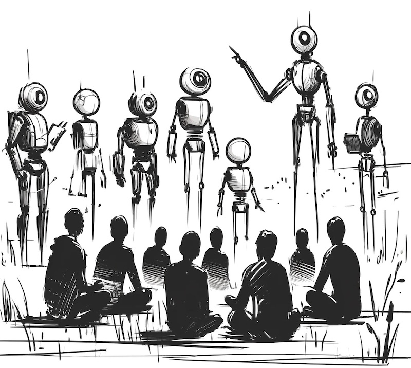
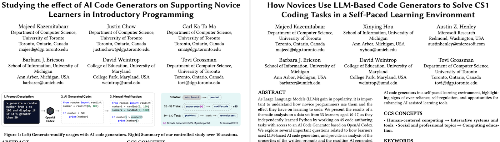
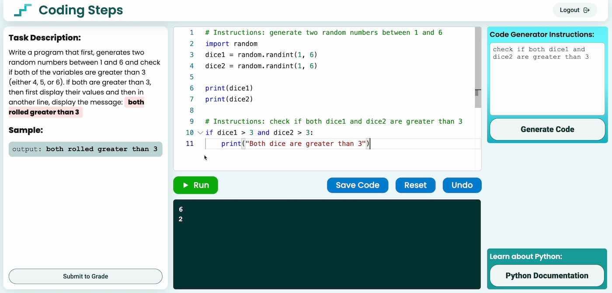

Austin Z. Henley
Associate Teaching Professor
Carnegie Mellon University
Learning to code with and without AI
3/31/2024

This post was co-written with Majeed Kazemitabaar, a PhD student at the University of Toronto, whom I've been collaborating with on AI tools for CS education. We summarize two research papers in this post that Majeed led.
Tools like ChatGPT are capable of solving many introductory programming tasks. In fact, you can often just copy-paste the instructions without any additional effort and get a detailed solution and explanation back.
This has caused a lot of discussion about the learning effects of LLMs that generate code from natural language descriptions on programming education (e.g., The Robots Are Coming). Educators are concerned about students becoming over-reliant on AI tools and not learning effectively. In contrast, these tools might also potentially lower the barriers of entry to programming, and even broaden participation into computing!
Towards understanding what is really going on here, we had two fundamental questions:
- What is the effect of AI code generators on novices in introductory programming courses?
- How do novices use AI code generators in introductory programming courses?

The full details of this research can be found in two papers: Studying the effect of AI Code Generators on Supporting Novice Learners in Introductory Programming (CHI'23) and How Novices Use LLM-Based Code Generators to Solve CS1 Coding Tasks in a Self-Paced Learning Environment (Koli Calling'23).
Methodology
To answer these questions, we conducted a controlled study over 10 sessions in August 2022 with 69 students (ages 10-17) that had no prior Python programming experience. On the first session students were taught the first basic concepts of programming such as variables, conditionals, and loops using Scratch. Students were then immediately evaluated for their high-level computational thinking skills using 25 Scratch code-tracing questions.
For the next seven sessions, students were then divided into two groups: the Baseline group and the Codex group. During these seven sessions, both groups of students worked on 45 two-part tasks using Coding Steps, the tool developed for the study. Coding Steps included novice-friendly documentations and allowed remote TAs to provide real-time feedback on students' submissions. The first part of each task was a code-authoring task in which students had to write code based on the provided instructions, while the second part was a code-modifying task where students had to modify the correct solution to the previous part based on additional requirements. Students in the Codex group only had optional access to the LLM code generator during the code-authoring task.

The code generator was based on OpenAI Codex and allowed students to type in a natural language description of a program that it would then convert into Python code.
Lastly, the final two sessions focused on evaluating students' performance in which they did not have access to Codex or other assistances. Both evaluation sessions included ten coding tasks and 40 multiple-choice questions. The first evaluation post-test was conducted a day after the seven training sessions, while the second test was conducted a week later, using similar tasks that were slightly modified.
Learning performance with and without AI
First, let's look at the results from the seven training sessions. See Majeed's CHI'23 paper for more details.
- Students in the Codex group made more progress during the seven sessions of training and finished significantly more tasks (91%) than the Baseline group (79%).
- On code-authoring tasks, students in the Codex group had a significantly higher correctness score (80%) than the Baseline (44%), and overall finished the tasks significantly faster.
- However, on the code-modifying tasks, both groups performed similarly in terms of correctness, with the Codex group performing slightly better (66%) than the Baseline (58%).
- Although the first two results were somehow expected, their similar performance on the code-modifying tasks is promising! Students in the Codex group relied heavily on the AI to complete the previous part of the code-modifying tasks, but performed just as well and in some cases better than the Baseline group.
Second, let's look at the results from the two evaluation post-tests that were conducted in the last two sessions.
- On the Immediate Post-test that was conducted a day after the training sessions, both groups performed similarly on coding tasks (Codex: 61%, Baseline: 63%) and multiple-choice questions (Codex: 49%, Baseline: 42%).
- However, on the Retention Post-test that was conducted a week later, the Codex group was able to retain what they learned slightly better on the coding tasks (Codex: 59%, Baseline: 50%) and multiple-choice questions (Codex: 44%, Baseline: 35%).
- Focusing on the top 50% students who performed higher on the Scratch pre-test scores, students who had access to Codex performed significantly better (74%) than the Baseline group (60%).
- Additionally, students in the Codex group were more eager and excited to continue learning about programming, and felt much less stressed and discouraged during the training.
Learning with AI: over-reliance vs. self-regulation
We performed a thematic analysis on 1666 usages of the AI code generator by students in the Codex group from the seven training sessions. We focused on how they used the tool, what prompts they used, and how did they verify and use the AI-generated code. We discovered various signs of over-reliance and signs of self-regulation that are discussed below. See our Koli Calling'23 paper for more details.
- Students frequently (n=501, 30%) copied the task description to generate the entire code with no prior manual coding attempts. 😰
- Sometimes (n=197, 12%) students divided the task into multiple subgoals, and asked the AI to generate *only* the first subgoal instead of the entire task. 😊
- When decomposing the task into multiple subgoals, students sometimes (n=85, 5%) asked for code that was already in their editor. 😰
- Although rarely (n=16, 1%), but sometimes students generated code after having the solution to check and compare the AI's output with their own solution. 😊
- Students occasionally (n=89, 5%) wrote prompts that were similar to pseudo-code (e.g. "for num in numbers, if num > large, set large to num"). 😊
- Although most of the times students properly tested the AI-generated code before submitting, there were several (n=63, 4%) instances in which students submitted AI code without testing it. 😰
- Although rarely, but sometimes (n=30, 2%) students actively tinkered with the AI-generated code to properly understand the syntax and logic. 😊
- Similarly, sometimes students manually added code (like `print` statements) to the AI-generated code to help them verify that it works correctly. 😊
Future tool designers and educators, should promote opportunities for self-regulated use of LLM code generators, while discouraging unregulated usages explained above.
For more details, check out the papers, Studying the effect of AI Code Generators on Supporting Novice Learners in Introductory Programming (CHI'23) and How Novices Use LLM-Based Code Generators to Solve CS1 Coding Tasks in a Self-Paced Learning Environment (Koli Calling'23), led by Majeed Kazemitabaar.
Stay tuned to hear about the tools we built based on these findings!
Special thanks to the other co-authors: Justin Chow, Carl Ka To Ma, Xinying Hou, Barbara Ericson, David Weintrop, and Tovi Grossman.